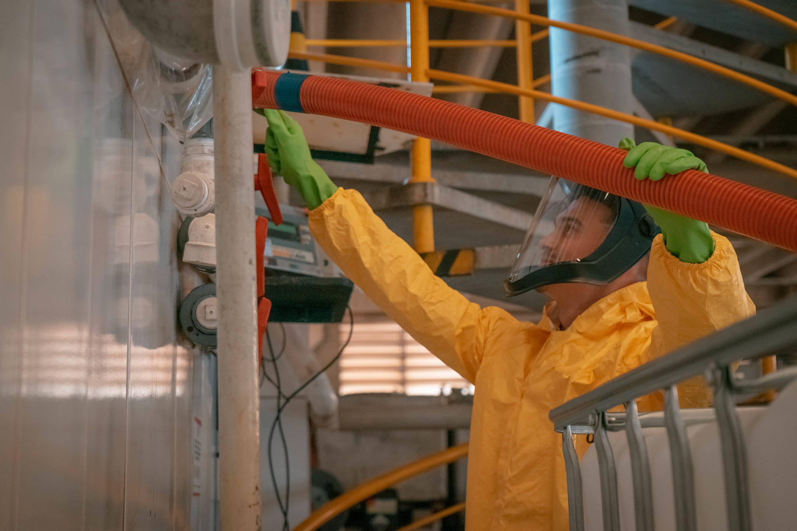
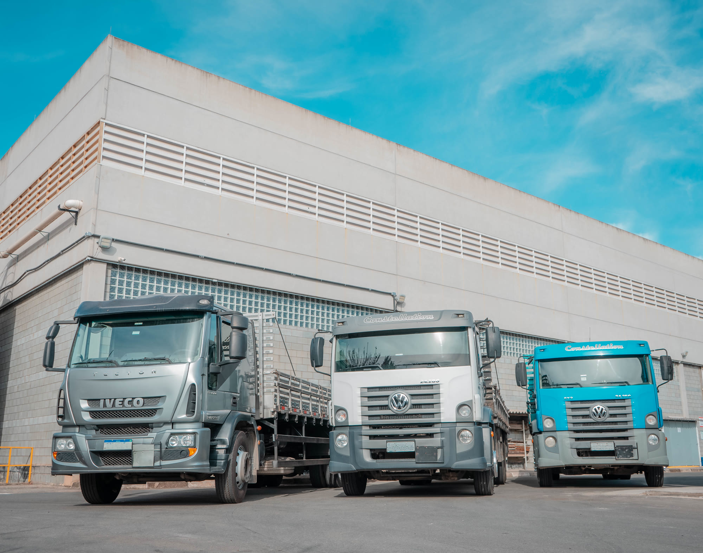

Fabricante Nacional de Produtos Químicos com alto nível de pureza.
Fabricamos e diluímos Ácido Nítrico PA 65%, Ácido Sulfúrico PA-ACS e Ácido Clorídrico PA-ACS sob especificação — com laboratório próprio, logística própria e rastreabilidade em cada lote. A confiança que a indústria química brasileira precisa.


Os três reagentes que sustentam a indústria química brasileira.
Ácido Nítrico PA 65%
Fabricado e diluído sob especificação, com certificado de análise por lote.
Ver especificações completas →Ácido Sulfúrico PA-ACS
Padrão American Chemical Society, referência para uso laboratorial e industrial.
Ver especificações completas →Ácido Clorídrico PA-ACS
Alta pureza para análises, decapagem e controle de processo.
Ver especificações completas →
Produção · Ácido Sulfúrico PA-ACSReferência nacional em ácidos de alto grau de pureza.
Especialistas em Ácido Sulfúrico PA-ACS e Ácido Nítrico PA 65%, fabricados e diluídos conforme a especificação do cliente e os padrões da American Chemical Society (ACS), com segurança em cada etapa do processo.

Cotia · SP — sede e produção
Do laboratório à entrega, sob nosso próprio controle.
Frota própria com licença LETPP para produtos perigosos, garantindo agilidade e segurança máxima em cada entrega na Grande São Paulo e demais regiões — sem depender de terceiros.
Não é o que dizemos. É o que comprovamos.
Uma linha dedicada aos reagentes de mais alta pureza.
Especificações analíticas rigorosas, certificado de análise por lote e suporte técnico para laboratórios que não podem correr riscos.
Um produto para cada necessidade.
Ácidos, sais e reagentes de alta pureza, produzidos sob rigoroso controle de qualidade.
A sustentabilidade faz parte do nosso propósito.
Gestão sustentável com alto grau de qualidade em nossos produtos — os reconhecimentos que conquistamos refletem o comprometimento de toda a nossa equipe.
Conheça nossas iniciativasPrecisa de um fornecedor químico em quem confiar?
Fale com nosso time comercial e receba uma proposta sob medida para a sua necessidade.